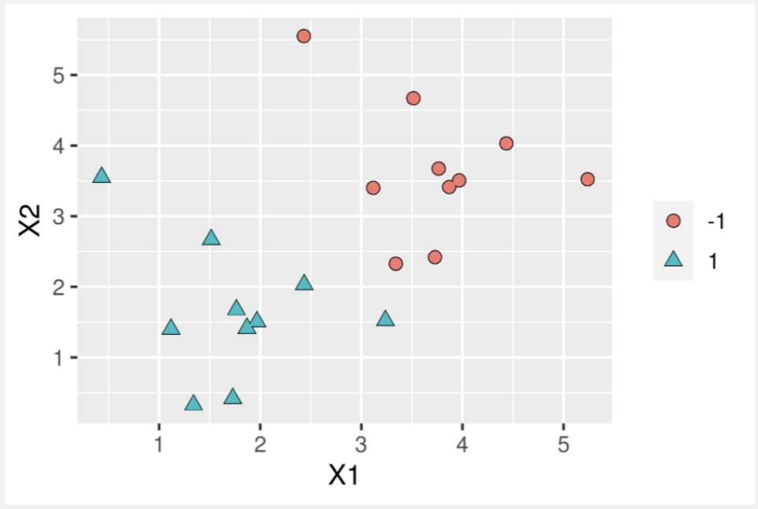
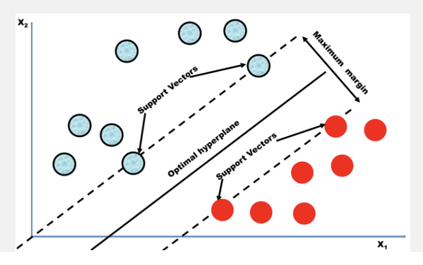
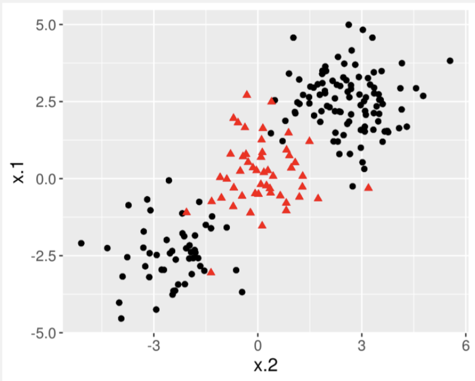
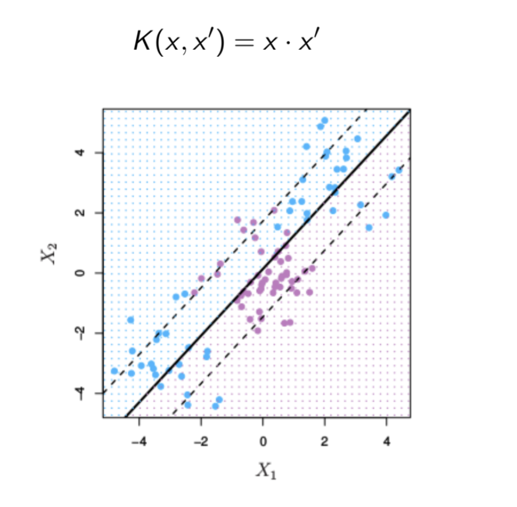
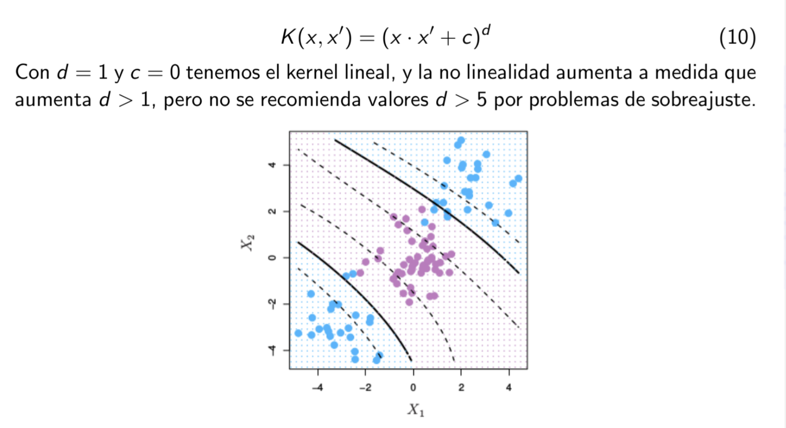

Clasificación Bayesiana y Máquinas de Soporte Vectorial (SVM)
2024-10-15
Unidad III: Análisis utilizando aprendizaje supervisado
- Clasificación Bayesiana y Máquinas de Soporte Vectorial (SVM)
Objetivo de la Clase
Comprender los fundamentos de la clasificación Bayesiana y su aplicación práctica.
Aplicar los algoritmos de Máquinas de Soporte Vectorial (SVM) para la clasificación de datos.
Evaluar las ventajas y desventajas de cada enfoque en diferentes escenarios de minería de datos.
Introducción
Método práctico para inducir modelos probabilísticos y razonar sobre nuevos datos. Permite calcular la probabilidad asociada a cada hipótesis, ofreciendo una ventaja frente a otras técnicas.
Proporciona un marco para analizar variadas técnicas de aprendizaje y minería de datos, en el ambito de la descripción y clasificación.
Ejemplo: Sistema de Recomendación en Inversiones
Como ejemplo de la ventaja que supone poder dar la probabilidad asociada a la clasificación, piénsese en un sistema de recomendaciones para invertir en bolsa.
A partir de unos datos de entrada sobre un determinado producto, el sistema nos recomienda si invertir o no.
Si no invertimos, no perdemos nada, pero si invertimos podremos multiplicar nuestra inversión o perderla parcial o totalmente.
Supongamos que consultamos acerca de dos productos diferentes, P1 y P2.
Si el sistema no trata con incertidumbre, podría decir SI para ambos productos, lo que podría llevarnos a diversificar la inversión.
Si el sistema usa un método bayesiano, la salida podría ser:
- P1: SI con probabilidad 0.9, NO con probabilidad 0.1.
- P2: SI con probabilidad 0.52, NO con probabilidad 0.48.
Sin duda alguna, el encargado de tomar la decisión preferiría tener esta información a la proporcionada por un sistema no bayesiano.
Teorema de Bayes
El Teorema de Bayes, propuesto por el filósofo inglés Thomas Bayes en 1760, permite calcular distribuciones condicionales.
Este teorema proporciona la probabilidad de que ocurra un evento A, dado que ya ha ocurrido un evento B. La fórmula es: \[ P(A|B) = \frac{{P(A) \cdot P(B|A)}}{{P(B)}} \]
Donde: - P(A|B): Probabilidad a posteriori. - P(B|A): Verosimilitud. - P(A): Probabilidad a priori.
Clasificación Bayesiana: Naïve Bayes
Suposición: todos los atributos son independientes conocido el valor de la clase.
Si los eventos A y B son independientes, entonces se cumple que:
\[ P(A|B) = P(A) \quad \text{y} \quad P(B|A) = P(B) \]
- El modelo de clasificación con redes bayesianas se basa en la suposición de que todos los atributos son independientes, conocido el valor de la variable clase.
Representación Gráfica de una Red Bayesiana
Modelo probabilístico con un único nodo raíz (la clase), y todos los atributos son nodos hoja que tienen como único padre a la variable clase.
[Hernández et al., 2004]
Representación de Red Bayesiana
Probabilidad Condicional con Múltiples Predictores
Para más de un predictor:
Sean \(x_1\) y \(x_2\) dos predictores de la clase \(C\), la probabilidad condicional se define como:
\[ P(C|x_1, x_2) = \frac{P(x_1, x_2|C) \cdot P(C)}{P(x_1, x_2)} = \frac{P(x_1|C) \cdot P(x_2|C) \cdot P(C)}{P(x_1, x_2)} \]
Para tres predictores:
\[ P(C|x_1, x_2, x_3) = \frac{P(x_1, x_2, x_3|C) \cdot P(C)}{P(x_1, x_2, x_3)} \] \[ \frac{P(x_1, x_2, x_3|C) \cdot P(C)}{P(x_1, x_2, x_3)} = \frac{P(x_1|C) \cdot P(x_2|C) \cdot P(x_3|C) \cdot P(C)}{P(x_1, x_2, x_3)} \]
Ejemplo de Naive Bayes
Para entender mejor cómo funciona Naive Bayes, consideremos un conjunto de datos con 1500 observaciones y tres clases de salida:
- Gato
- Loro
- Tortuga
Las variables predictoras son categóricas (verdadero o falso):
- Nadar
- Alas
- Color verde
- Dientes afilados
Resumen de Clases
Clase de Gatos: - 450 de 500 (90%) de gatos pueden nadar - 0 gatos tienen alas - 0 gatos son de color verde - Todos los 500 gatos tienen dientes afilados
Clase de Loros: - 50 de 500 (10%) de loros pueden nadar - Todos los 500 loros tienen alas - 400 de 500 (80%) son de color verde - Ningún loro tiene dientes afilados
Clase de Tortugas: - Las 500 tortugas pueden nadar - 0 tortugas tienen alas - 100 de 500 (20%) son de color verde - 50 de 500 (10%) tienen dientes afilados
Clasificación con Naive Bayes
Con estos datos, clasifiquemos la siguiente observación en una de las clases de salida (gato, loro o tortuga) usando Naive Bayes.
Observación:
- Nadar: Verdadero
- Color Verde: Verdadero
El objetivo es predecir si el animal es un gato, loro o tortuga basándonos en estas variables.
Verificación: ¿Es un Gato?
Para comprobar si el animal es un gato, calculamos:
\[ \small P(\text{Gato} | \text{Nadar}, \text{Verde}) = \frac{P(\text{Nadar}|\text{Gato}) \cdot P(\text{Verde}|\text{Gato}) \cdot P(\text{Gato})}{P(\text{Nadar}, \text{Verde})} \]
Sustituyendo valores:
\[ \small P(\text{Gato} | \text{Nadar}, \text{Verde}) = \frac{0.9 \cdot 0 \cdot 0.333}{P(\text{Nadar}, \text{Verde})} = 0 \]
Verificación: ¿Es un Loro?
Para comprobar si el animal es un loro, calculamos:
\[ \small P(\text{Loro} | \text{Nadar}, \text{Verde}) = \frac{P(\text{Nadar}|\text{Loro}) \cdot P(\text{Verde}|\text{Loro}) \cdot P(\text{Loro})}{P(\text{Nadar}, \text{Verde})} \]
Sustituyendo valores:
\[ \small P(\text{Loro} | \text{Nadar}, \text{Verde}) = \frac{0.1 \cdot 0.8 \cdot 0.333}{P(\text{Nadar}, \text{Verde})} = \frac{0.0264}{P(\text{Nadar}, \text{Verde})} \]
Verificación: ¿Es una Tortuga?
Para comprobar si el animal es una tortuga, calculamos:
\[ P(\text{Tortuga} | \text{Nadar}, \text{Verde}) = \frac{P(\text{Nadar}|\text{Tortuga}) \cdot P(\text{Verde}|\text{Tortuga}) \cdot P(\text{Tortuga})}{P(\text{Nadar}, \text{Verde})} \]
Sustituyendo valores:
\[ P(\text{Tortuga} | \text{Nadar}, \text{Verde}) = \frac{1 \cdot 0.2 \cdot 0.333}{P(\text{Nadar}, \text{Verde})} = \frac{0.0666}{P(\text{Nadar}, \text{Verde})} \]
Verificación: ¿Es una Tortuga?
Para comprobar si el animal es una tortuga, calculamos:
\[ P(\text{Tortuga} | \text{Nadar}, \text{Verde}) = \frac{P(\text{Nadar}|\text{Tortuga}) \cdot P(\text{Verde}|\text{Tortuga}) \cdot P(\text{Tortuga})}{P(\text{Nadar}, \text{Verde})} \]
Sustituyendo valores:
\[ P(\text{Tortuga} | \text{Nadar}, \text{Verde}) = \frac{1 \cdot 0.2 \cdot 0.333}{P(\text{Nadar}, \text{Verde})} = \frac{0.0666}{P(\text{Nadar}, \text{Verde})} \]
Conclusión
Para todos los cálculos, el denominador es el mismo, es decir, \(P(\text{Nadar}, \text{Verde})\). \[ P(\text{Tortuga} | \text{Nadar}, \text{Verde}) = 0.0666 / P(\text{Nadar}, \text{Verde}) \] \[ P(\text{Loro} | \text{Nadar}, \text{Verde}) = 0.0264 / P(\text{Nadar}, \text{Verde}) \]
Dado que \(P(\text{Tortuga} | \text{Nadar}, \text{Verde})\) es mayor que \(P(\text{Loro} | \text{Nadar}, \text{Verde})\), podemos predecir correctamente que el animal es una Tortuga.
Algoritmo de Naive Bayes
- Encontrar \(P(C_i)\), calculando el total de la i-ésima clase en el total de datos de entrenamiento.
- Calcular la \(P(x_t|C_i)\) para cada atributo o predictor de los datos de entrenamiento \(X\).
- Calcular la \(P(X|C_i) = \prod_{t=1}^{n} P(x_t|C_i)\).
- Calcular la \(P(C_i|X)\).
- Seleccionar la mayor probabilidad para clasificar los nuevos datos.
Ejemplo: Diagnóstico de Sepsis usando Naive Bayes
Vamos a usar un ejemplo para ilustrar cómo funciona la clasificación Naive Bayes. El ejemplo utilizado es el diagnóstico de sepsis. Supongamos que hay dos predictores de sepsis: la tasa respiratoria y el estado mental.
Tabla de Verosimilitudes
La siguiente tabla muestra las verosimilitudes para diagnosticar sepsis usando la tasa respiratoria y el estado mental. Los datos provienen de un conjunto de entrenamiento.
| Tasa Respiratoria | Estado Mental | Total | |
|---|---|---|---|
| Rápida | Lenta | Alterado | |
| Sepsis | 15/20 | 5/20 | 17/20 |
| No-Sepsis | 5/80 | 75/80 | 3/80 |
| Total | 20/100 | 80/100 | 20/100 |
Probabilidades Previas
Las probabilidades previas para sepsis y no-sepsis son:
- \(P(\text{sepsis}) = 20/100 = 0.2\)
- \(P(\text{no-sepsis}) = 80/100 = 0.8\)
Probabilidades de Verosimilitud
Las probabilidades de verosimilitud para los diferentes predictores son:
\(P(\text{tasa respiratoria rápida}|\text{sepsis}) = 15/20 = 0.75\)
\(P(\text{tasa respiratoria lenta}|\text{sepsis}) = 5/20 = 0.25\)
\(P(\text{tasa respiratoria rápida}|\text{no-sepsis}) = 5/80 = 0.0625\)
\(P(\text{tasa respiratoria lenta}|\text{no-sepsis}) = 75/80 = 0.9375\)
\(P(\text{estado mental alterado}|\text{sepsis}) = 17/20 = 0.85\)
\(P(\text{estado mental normal}|\text{sepsis}) = 3/20 = 0.15\)
\(P(\text{estado mental alterado}|\text{no-sepsis}) = 3/80 = 0.0375\)
\(P(\text{estado mental normal}|\text{no-sepsis}) = 77/80 = 0.9625\)
Aplicando Naive Bayes
Queremos clasificar un paciente con una tasa respiratoria lenta y un estado mental alterado. Según la regla de clasificación de máxima verosimilitud, calculamos solo el numerador de la ecuación de Bayes.
La verosimilitud de sepsis dado una tasa respiratoria lenta y un estado mental alterado es:
\[ \tiny P(\text{sepsis}|\text{tasa respiratoria lenta} \cap \text{alterado}) = P(\text{tasa respiratoria lenta}|\text{sepsis}) \times P(\text{alterado}|\text{sepsis}) \times P(\text{sepsis}) \]
Cálculo de Sepsis
Sustituyendo los valores en la fórmula:
\[ P(\text{sepsis}|\text{lenta}, \text{alterado}) = 0.25 \times 0.85 \times 0.2 = 0.0425 \]
Cálculo de Sepsis
Sustituyendo los valores en la fórmula:
\[ P(\text{sepsis}|\text{lenta}, \text{alterado}) = 0.25 \times 0.85 \times 0.2 = 0.0425 \]
Clasificación Bayesiana: Ventajas
- Funciona mejor que otros modelos o algoritmos, bajo el supuesto de independencia entre los predictores.
- Requiere una pequeña cantidad de datos de entrenamiento para estimar los datos de prueba.
- Es fácil de implementar.
Clasificación Bayesiana: Desventajas
- Asume implícitamente que todos los atributos son mutuamente independientes; en la vida real, es casi imposible que obtengamos un conjunto de predictores completamente independientes.
- Si la variable categórica tiene una categoría en el conjunto de datos de prueba que no se observó en el conjunto de entrenamiento, el modelo asignará una probabilidad de 0 y no podrá hacer una predicción (frecuencia cero).
Clasificadores Basados en Redes Bayesianas (RB)
- TAN (Tree Augmented Naïve Bayes): permite ciertas dependencias entre los atributos, asumiendo una red bayesiana con forma de árbol.
- BAN (Bayesian Network Augmented Naive Bayes): similar a TAN, permite iniciar la red como un NB y luego agregar arcos con un algoritmo de aprendizaje.
- Redes Bayesianas: aprenden una red incluyendo todas las variables (clase y atributos) para clasificar.
Aplicaciones de Clasificación Bayesiana
- Predicción en tiempo real.
- Predicción de clases múltiples: bien conocido por su función en problemas de múltiples clases.
- Clasificación de texto: usada ampliamente debido a mejores resultados en problemas de varias clases y su regla de independencia.
Otras Aplicaciones
- Filtrado de correo no deseado: se usa ampliamente en la detección de spam.
- Análisis de opinión: utilizado en el análisis de redes sociales para identificar sentimientos positivos y negativos.
- Sistemas de recomendación: para filtrar información y predecir si un usuario desea un recurso determinado o no.
Un Poco de Historia: Máquinas de Soporte Vectorial (SVM)
- Las SVM fueron desarrolladas por Vladimir Vapnik y su equipo en los laboratorios AT&T a finales de los años 70 y durante los 80.
- El modelo fue presentado formalmente en la conferencia COLT (Computational Learning Theory) en 1992 por Vapnik y otros autores.
- Este avance marcó un hito importante al llevar la formulación teórica de las SVM hacia su aplicación práctica en problemas reales de reconocimiento de formas (pattern recognition).
Clasificación Binaria Lineal en SVM
- Objetivo: Encontrar un hiperplano que separe dos clases de manera óptima.
- Margen máximo: Se maximiza la distancia entre las clases y el hiperplano.
- Función de decisión: Clasifica los puntos según su posición relativa al hiperplano.
- Soporte vectorial: Los puntos más cercanos al hiperplano que definen la frontera de separación.
- Linealidad: Adecuado para problemas donde las clases son separables linealmente.
Imagen Clasificación Binaria Lineal en SVM
Clasificacion Binaria Lineal
Cual es el mejor hiperplano separador?

Clasificacion Binaria Lineal
Hiperplano que Maximiza el Margen Geométrico
La idea central de las SVM de margen máximo consiste en seleccionar el hiperplano que maximiza la distancia mínima (o margen geométrico) entre los ejemplos del conjunto de datos y el hiperplano.
Solo los puntos que se encuentran en las fronteras (conocidos como vectores soporte) son considerados para definir el hiperplano óptimo.
Este enfoque se justifica dentro de la teoría del aprendizaje estadístico y está alineado con el principio de Minimización del Riesgo Estructural.
Referencia: [Hernández et al., 2004].
Hiperplano que Maximiza el Margen Geométrico
Hiperplano que Maximiza el Margen Geométrico
Clasificación Lineal
Supongamos dos vectores \(x = (x, y)\) y \(w = (w_1, w_2)\), y una constante \(b\), la ecuación de la recta \(y = ax + c\) se define como:
\[ x \cdot w + b = 0 \]
Expandiendo:
\[ (x, y) \cdot (w_1, w_2) + b = 0 \]
\[ xw_1 + yw_2 + b = 0 \]
Despejando para \(y\):
\[ y = -\frac{w_1}{w_2}x - \frac{b}{w_2} \]
Función de Clasificación
La función de clasificación para una entrada \(x_i\) se define como:
\[ f(x_i) = \begin{cases} +1 & \text{si } x \cdot w + b \geq 0 \\ -1 & \text{si } x \cdot w + b < 0 \end{cases} \]
Clasificacion No Lineal
Clasificación No Lineal
Clasificación No-Lineal
El aprendizaje de separadores no lineales se consigue mediante una transformación no lineal del espacio de atributos de entrada (input space) hacia un espacio de características (feature space) de dimensionalidad mucho mayor, donde es posible realizar una separación lineal.
El uso de las denominadas funciones núcleo (kernel functions), que calculan el producto escalar de dos vectores en el espacio de características, permite trabajar de manera eficiente en dicho espacio sin la necesidad de calcular explícitamente las transformaciones de los ejemplos de aprendizaje.
Referencia: [Hernández et al., 2004].
Kernel
Un kernel es una función que devuelve el resultado del producto punto entre dos vectores, realizado en un espacio dimensional diferente al espacio original donde se encuentran los vectores.
El producto punto entre dos vectores \(a\) y \(b\) se define como:
\[ a \cdot b = \sum_{i=1}^{n} a_i b_i = a_1 b_1 + a_2 b_2 + \dots + a_n b_n \]
- Esta transformación permite realizar operaciones en un espacio de características de mayor dimensionalidad sin necesidad de calcular explícitamente las coordenadas de los vectores en el nuevo espacio.
Kernel Lineal
Kernel Lineal
Kernel Polimonico
Kernel Polimonico
Kernel Gaussiano

Kernel Gaussiano
Algoritmo para un SVM
- Definir el hiperplano \(X\beta = 0\).
- Transformar los datos utilizando una función de núcleo (kernel).
- Seleccionar un hiperplano que maximice el margen geométrico.
- Como la posibilidad de una separación perfecta es baja, es necesario permitir cierta holgura para el margen, permitiendo que algunos puntos estén en el lado equivocado del margen.
- Determinar los hiperparámetros óptimos (por ejemplo, \(\gamma\), penalización).
- Evaluar el modelo.
Ventajas de SVM
Alta dimensionalidad: SVM es eficaz en espacios de alta dimensión, como en la clasificación de documentos y el análisis de sentimientos, donde la dimensionalidad puede ser extremadamente grande.
Eficiencia de memoria: Solo un subconjunto de los puntos de entrenamiento (vectores soporte) se utiliza en el proceso de decisión para asignar nuevos miembros, lo que reduce la memoria requerida.
Versatilidad: La capacidad de aplicar diferentes funciones núcleo (kernel) permite mayor flexibilidad en los límites de decisión, mejorando el rendimiento de la clasificación, especialmente en problemas no lineales.
Desventajas de SVM
Selección de parámetros del kernel: Las SVM son muy sensibles a la elección de los parámetros del kernel. En espacios de características de alta dimensión con pocas muestras, los vectores soporte son menos efectivos, lo que puede llevar a un rendimiento de clasificación deficiente al agregar nuevas muestras.
No probabilístico: SVM no proporciona una interpretación probabilística directa para la pertenencia a un grupo. El clasificador solo coloca los objetos por encima o por debajo de un hiperplano de clasificación. Sin embargo, una métrica para determinar la “efectividad” de la clasificación es la distancia del nuevo punto al límite de decisión.
SVM vs. Redes Neuronales (NN)
Similaridades:
- Ambos algoritmos son paramétricos, dependen del parámetro de costo (C) y de la función kernel.
- Ambos pueden aproximar funciones de decisión no lineales.
- Clasifican con una precisión comparable.
SVM vs. Redes Neuronales (NN)
Diferencias:
- Una red neuronal profunda tiene una complejidad mayor que una SVM con el mismo número de parámetros.
- SVM identifica de forma fiable el límite de decisión usando vectores soporte, mientras que NN requiere procesar toda la data de entrenamiento.
- SVM requiere menos tiempo de procesamiento que NN.
- SVM son más confiables y garantizan la convergencia a un mínimo global, independientemente de la configuración inicial.
Aplicaciones de SVM
Problema de la doble espiral: Un problema artificial que consiste en aprender a distinguir dos áreas que definen espirales en un plano bidimensional.
Categorización o clasificación de textos: Usado para la organización automática de documentos y filtrado de documentos, como el filtrado de mensajes no deseados o spam.
Modelo basado en bag-of-words: Representa documentos utilizando vectores de palabras, conocido como el modelo de bolsa de palabras.
Conclusiones
¿Cómo se define el Teorema de Bayes?
¿En qué consiste la clasificación Bayesiana?
¿Cuáles son las ventajas y desventajas de Naive Bayes (NB)?
¿Cómo funciona el algoritmo SVM?
¿Cuáles funciones núcleo (kernel) se pueden utilizar?
¿Cuáles son las ventajas y desventajas de SVM?
Aplicaciones de SVM y Naive Bayes.
Referencias
- EMC Education Services (2015). Data Science and Big Data Analytics.
- Hernández, J., Ramírez, M. J., Ferri, C. (2004). Introducción a la minería de datos.
- Material de Clase Mailiu: m.dazpea@uandresbello.edu